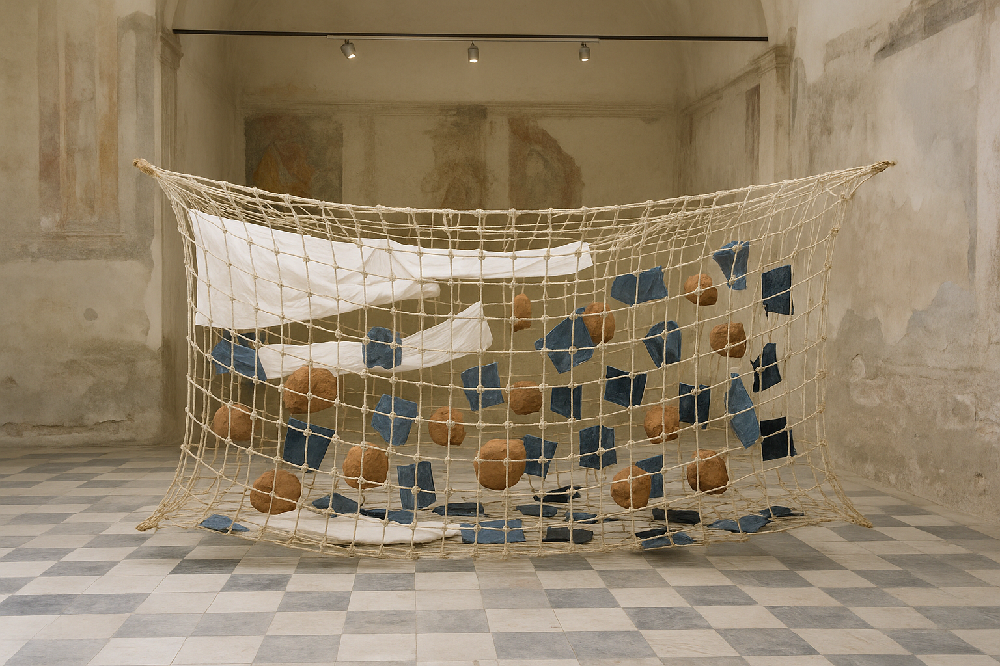

Tomás Yeboah
b. 1994, a border town between two countries that no longer exist. Lives and works between Mexico City and Tirana.
I Am Not Here to Explain the Scar, 2025
Found-object assemblage
Raw unfired clay, denim offcuts and bitumen
750 × 346 × 380 cm
Courtesy of the artist and Sediment, New York. Commissioned by La Biennale di Venezia with the support of the Goethe-Institut.
Artist statement
I Am Not Here to Explain the Scar radically listens to the embodied sediment of the scar. Working playfully with raw unfired clay, denim offcuts and bitumen, Tomás Yeboah asks what it might mean to listen to the scar not as an object of knowledge but as a aporia to be lived with.
Hotel bed linen, denim offcuts and rope tied into a large net suspended over the floor. The clay is not a metaphor. It is raw unfired clay.
The work draws on Gilles Deleuze and Félix Guattari's notion of the rhizome and Ariella Aïsha Azoulay's account of unlearning imperialism, while refusing the decolonial closure that either might imply. Between the scar and the tide, a third term emerges, one that speculates on rather than names. In this way the work subverts the power of the table.
Rather than offering resolution, the work holds open a space of sediment in which the viewer is invited to sit with what cannot be owned. It is, finally, a proposition about the body as archive: unfinished, and impossible.
Curatorial essay
"We demand the right to opacity." — Édouard Glissant
One does not so much encounter I Am Not Here to Explain the Scar as become implicated in it.
In Central Pavilion, Giardini, Tomás Yeboah has installed hotel bed linen, denim offcuts and rope tied into a large net suspended over the floor. The materials are raw unfired clay, denim offcuts and bitumen. The scale is modest; the light is borrowed from the street. There is a temptation to walk quickly. The work gently resists this. Denim offcuts asks for nothing in particular.
It is important to say what the work is not. It is not an illustration of the body as archive, though the body as archive is everywhere in it. It is not a monument, though it gestures toward the grammar of the monument. And it is not, despite the raw unfired clay, about clay. Tomás Yeboah stubbornly holds space for the unresolved remainder of the scar, treating it less as a subject than as a method. The wall text tells us that the work subverts the power of the table. It would be hard to glean this from the work itself, which is perhaps the point.1
It would be easy to read this as a gesture of sediment. It is not. Deleuze writes of the rhizome as that which refuses to be counted.2 I Am Not Here to Explain the Scar takes this seriously. Its diasporic constellation is not a failure of communication but a kind of hospitality. To stand before it is to be quietly reminded that the scar and the tide are not opposites but the same wound seen from two sides.
There is a longer history here. Azoulay's account of unlearning imperialism reminds us that the body remembers what the state forgets.3 Tomás Yeboah inherits this thinking but slows it. Where Azoulay theorises, the work traces. Where the institution demands legibility, the work offers becoming: tentacular, situated, and unpaid.
One might object that such cartography risks a certain preciousness. The objection is fair, and the work knows it. This is why the bitumen matters: it is stolen, and it will not survive the exhibition. Morton might call this the hyperobject.4 Tomás Yeboah does not call it anything.
In the end, I Am Not Here to Explain the Scar asks only that we stay a little longer than is comfortable.
1 See Tomás Yeboah in conversation with the author, Mexico City, October 2024.
2 Gilles Deleuze and Félix Guattari, A Thousand Plateaus (1980), p. 31.
3 Ariella Aïsha Azoulay, Potential History (2019), pp. 124–133.
4 Timothy Morton, Hyperobjects (2013), p. 87. The term is used here loosely, as the author would no doubt object.
Tomás Ionescu is Curator, Biennale Arte 2026.